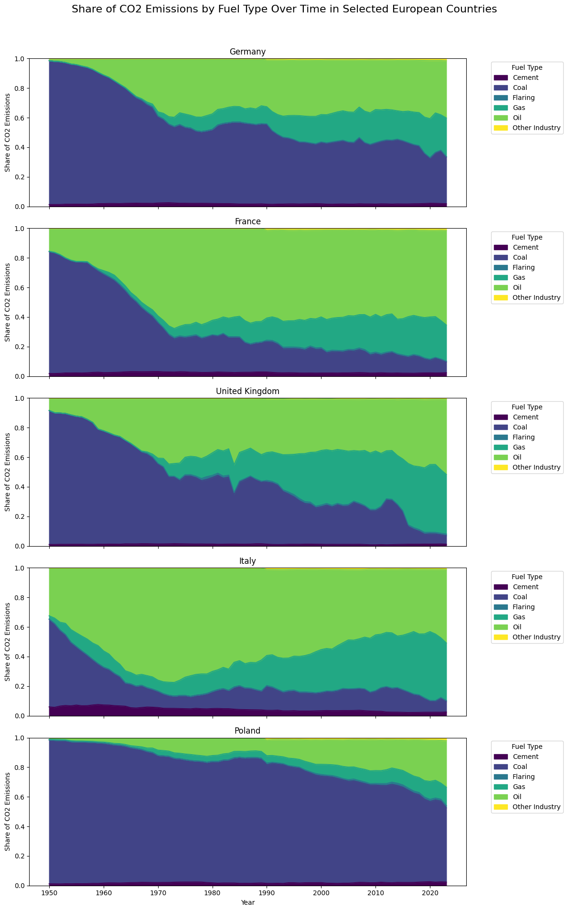
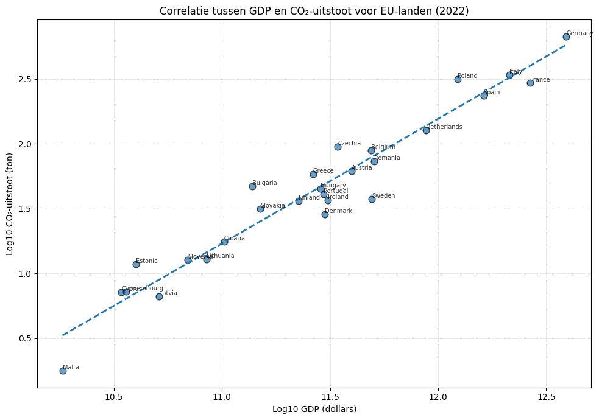

import pandas as pd
import matplotlib.pyplot as plt
import seaborn as sns
# Load the dataset
owid_co2_data_df = pd.read_csv('owid-co2-data.csv')
# List of European countries
european_countries = [
'Austria', 'Belgium', 'Bulgaria', 'Croatia', 'Cyprus', 'Czechia', 'Denmark',
'Estonia', 'Finland', 'France', 'Germany', 'Greece', 'Hungary', 'Ireland',
'Italy', 'Latvia', 'Lithuania', 'Luxembourg', 'Malta', 'Netherlands',
'Poland', 'Portugal', 'Romania', 'Slovakia', 'Slovenia', 'Spain', 'Sweden',
'United Kingdom', 'Norway', 'Switzerland', 'Iceland'
]
# Filter for European countries and relevant years (e.g., from 1950 onwards for better data availability)
df_co2_europe = owid_co2_data_df[owid_co2_data_df['country'].isin(european_countries) & (owid_co2_data_df['year'] >= 1950)].copy()
# Select relevant CO2 emission columns by fuel type
co2_fuel_cols = ['country', 'year', 'coal_co2', 'oil_co2', 'gas_co2', 'cement_co2', 'flaring_co2', 'other_industry_co2']
df_co2_fuel = df_co2_europe[co2_fuel_cols].copy()
# Fill NaN values with 0 for CO2 fuel columns before melting
for col in ['coal_co2', 'oil_co2', 'gas_co2', 'cement_co2', 'flaring_co2', 'other_industry_co2']:
df_co2_fuel[col] = df_co2_fuel[col].fillna(0)
# Melt the DataFrame to have fuel types as a single column
df_co2_fuel_melted = df_co2_fuel.melt(id_vars=['country', 'year'],
var_name='Fuel Type',
value_name='CO2 Emissions')
# Rename fuel type categories for better readability
df_co2_fuel_melted['Fuel Type'] = df_co2_fuel_melted['Fuel Type'].replace({
'coal_co2': 'Coal',
'oil_co2': 'Oil',
'gas_co2': 'Gas',
'cement_co2': 'Cement',
'flaring_co2': 'Flaring',
'other_industry_co2': 'Other Industry'
})
# Select a few key countries to visualize to avoid too much clutter
selected_countries_v3 = ['Germany', 'France', 'United Kingdom', 'Italy', 'Poland']
df_co2_fuel_selected = df_co2_fuel_melted[df_co2_fuel_melted['country'].isin(selected_countries_v3)]
# Calculate the total emissions for normalization within each country and year
df_co2_fuel_selected['Total Emissions'] = df_co2_fuel_selected.groupby(['country', 'year'])['CO2 Emissions'].transform('sum')
df_co2_fuel_selected['Share'] = df_co2_fuel_selected['CO2 Emissions'] / df_co2_fuel_selected['Total Emissions']
# Plotting with Matplotlib and Seaborn
fig, axes = plt.subplots(len(selected_countries_v3), 1, figsize=(12, 4 * len(selected_countries_v3)), sharex=True)
fig.suptitle('Share of CO2 Emissions by Fuel Type Over Time in Selected European Countries', fontsize=16)
for i, country in enumerate(selected_countries_v3):
ax = axes[i]
country_data = df_co2_fuel_selected[df_co2_fuel_selected['country'] == country]
# Pivot for stacked area plot
pivot_data = country_data.pivot(index='year', columns='Fuel Type', values='Share').fillna(0)
pivot_data.plot.area(ax=ax, stacked=True, cmap='viridis')
ax.set_title(country)
ax.set_ylabel('Share of CO2 Emissions')
ax.set_xlabel('Year')
ax.legend(title='Fuel Type', bbox_to_anchor=(1.05, 1), loc='upper left')
ax.set_ylim(0, 1) # Ensure y-axis is from 0 to 1 for share
plt.tight_layout(rect=[0, 0.03, 1, 0.96])
plt.show()
/tmp/ipykernel_33157/2101954123.py:48: SettingWithCopyWarning:
A value is trying to be set on a copy of a slice from a DataFrame.
Try using .loc[row_indexer,col_indexer] = value instead
See the caveats in the documentation: https://pandas.pydata.org/pandas-docs/stable/user_guide/indexing.html#returning-a-view-versus-a-copy
df_co2_fuel_selected['Total Emissions'] = df_co2_fuel_selected.groupby(['country', 'year'])['CO2 Emissions'].transform('sum')
/tmp/ipykernel_33157/2101954123.py:49: SettingWithCopyWarning:
A value is trying to be set on a copy of a slice from a DataFrame.
Try using .loc[row_indexer,col_indexer] = value instead
See the caveats in the documentation: https://pandas.pydata.org/pandas-docs/stable/user_guide/indexing.html#returning-a-view-versus-a-copy
df_co2_fuel_selected['Share'] = df_co2_fuel_selected['CO2 Emissions'] / df_co2_fuel_selected['Total Emissions']

import pandas as pd
import plotly.express as px
# Load the dataset
data2_df = pd.read_csv('data2.csv', skiprows=8)
# List of European countries
european_countries = [
'Austria', 'Belgium', 'Bulgaria', 'Croatia', 'Cyprus', 'Czechia', 'Denmark',
'Estonia', 'Finland', 'France', 'Germany', 'Greece', 'Hungary', 'Ireland',
'Italy', 'Latvia', 'Lithuania', 'Luxembourg', 'Malta', 'Netherlands',
'Poland', 'Portugal', 'Romania', 'Slovakia', 'Slovenia', 'Spain', 'Sweden',
'United Kingdom', 'Norway', 'Switzerland', 'Iceland'
]
# Filter for relevant data
df_renewables_v6 = data2_df[
(data2_df['Balance'] == 'Net Electricity Production') &
(data2_df['Unit'] == 'GWh') &
(data2_df['Country'].isin(european_countries))
].copy()
# Convert 'Time' to datetime objects
# Handle potential errors during conversion by coercing invalid dates to NaT
df_renewables_v6['Date_Parsed'] = pd.to_datetime(df_renewables_v6['Time'], format='%B %Y', errors='coerce')
# Drop rows where Date_Parsed is NaT due to parsing errors
df_renewables_v6.dropna(subset=['Date_Parsed'], inplace=True)
# Filter for relevant renewable product types
renewable_products = ['Hydro', 'Solar', 'Wind', 'Biofuels', 'Geothermal', 'Other renewables']
df_renewables_v6_filtered = df_renewables_v6[df_renewables_v6['Product'].isin(renewable_products)]
# Aggregate total generation by Date_Parsed and Product across all European countries
df_renewables_total_europe = df_renewables_v6_filtered.groupby(['Date_Parsed', 'Product'])['Value'].sum().reset_index()
# Sort by Date_Parsed for proper area chart display
df_renewables_total_europe = df_renewables_total_europe.sort_values(by='Date_Parsed')
# Create the stacked area chart with Plotly Express
fig = px.area(df_renewables_total_europe,
x='Date_Parsed',
y='Value',
color='Product',
title='Share of Renewable Energy Sources in European Electricity Production',
labels={'Date_Parsed': 'Date', 'Value': 'Electricity Generation (GWh)', 'Product': 'Renewable Source'},
line_group='Product', # Ensures proper stacking for different products
# For normalized stack, use groupnorm
groupnorm='fraction' # To show share (normalized stack)
)
fig.update_layout(yaxis_tickformat=".0%") # Format y-axis as percentage
fig.update_xaxes(title_text='Date')
fig.update_yaxes(title_text='Share of Renewable Generation')
fig.show()
import pandas as pd
import plotly.express as px
import plotly.graph_objects as go
from plotly.subplots import make_subplots
# 1. Data inlezen en filteren
df = (
pd.read_csv("data2.csv", skiprows=8)
.query("Balance=='Net Electricity Production' and Product=='Electricity' and Time=='March 2025'")
.loc[lambda d: d['Country'].isin([
'Austria','Belgium','Bulgaria','Croatia','Cyprus','Czech Republic',
'Denmark','Estonia','Finland','France','Germany','Greece',
'Hungary','Ireland','Italy','Latvia','Lithuania','Luxembourg',
'Malta','Netherlands','Poland','Portugal','Romania','Slovakia',
'Slovenia','Spain','Sweden'
])]
.assign(
gwh=lambda d: d['Value'].round(1),
iso_a3=lambda d: d['Country'].map({
'Austria':'AUT','Belgium':'BEL','Bulgaria':'BGR','Croatia':'HRV',
'Cyprus':'CYP','Czech Republic':'CZE','Denmark':'DNK','Estonia':'EST',
'Finland':'FIN','France':'FRA','Germany':'DEU','Greece':'GRC',
'Hungary':'HUN','Ireland':'IRL','Italy':'ITA','Latvia':'LVA',
'Lithuania':'LTU','Luxembourg':'LUX','Malta':'MLT','Netherlands':'NLD',
'Poland':'POL','Portugal':'PRT','Romania':'ROU','Slovakia':'SVK',
'Slovenia':'SVN','Spain':'ESP','Sweden':'SWE'
})
)
.drop(columns=['Balance','Product','Time','Value'])
)
# 2. Prepare sorted bar data
df_bar = df.sort_values("gwh", ascending=True)
# 3. Maak een subplot-figuur: 1 rij, 2 kolommen (map + bar)
fig = make_subplots(
rows=1, cols=2,
column_widths=[0.6, 0.4],
specs=[[{"type": "choropleth"}, {"type": "xy"}]],
subplot_titles=(
"Geografische spreiding<br><sup>Groen = laag, Rood = hoog</sup>",
"Rangorde productie per land"
)
)
# 4. Voeg choropleth toe
fig.add_trace(
go.Choropleth(
locations=df['iso_a3'],
z=df['gwh'],
text=df['Country'],
colorscale="RdYlGn_r",
zmin=df['gwh'].min(), zmax=df['gwh'].max(),
colorbar=dict(title="GWh", tickformat=",", len=0.6, y=0.5),
marker_line_color="white", marker_line_width=0.5,
hovertemplate="<b>%{text}</b><br>%{z:,.1f} GWh<extra></extra>"
),
row=1, col=1
)
# 5. Voeg horizontale bar chart toe
fig.add_trace(
go.Bar(
x=df_bar['gwh'],
y=df_bar['Country'],
orientation='h',
marker=dict(color=df_bar['gwh'], colorscale="RdYlGn_r", cmin=df['gwh'].min(), cmax=df['gwh'].max()),
hovertemplate="%{y}: %{x:,.1f} GWh<extra></extra>"
),
row=1, col=2
)
# 6. Layout-optimalisaties
fig.update_layout(
title_text="Energieproductie EU-27 – Maart 2025",
title_x=0.5,
template="plotly_white",
margin=dict(l=10, r=10, t=80, b=20)
)
fig.update_geos(
scope="europe",
projection_type="mercator",
showcountries=False, showsubunits=False,
lataxis_range=[34, 72], lonaxis_range=[-10, 35]
)
# 7. Toon de figuur
fig.show()
import pandas as pd
import matplotlib.pyplot as plt
import seaborn as sns
# Load the dataset
european_electricity_prices_df = pd.read_csv('european_wholesale_electricity_price_data_monthly.csv')
# Convert 'Date' to datetime objects
european_electricity_prices_df['Date'] = pd.to_datetime(european_electricity_prices_df['Date'])
# Filter for relevant years (e.g., from 2015 onwards as per the data head)
df_prices = european_electricity_prices_df[european_electricity_prices_df['Date'].dt.year >= 2015].copy()
# Select a few key countries to visualize
selected_countries_v4 = ['Germany', 'France', 'United Kingdom', 'Spain', 'Italy', 'Netherlands']
df_prices_selected = df_prices[df_prices['Country'].isin(selected_countries_v4)]
# Plotting with Matplotlib and Seaborn
plt.figure(figsize=(14, 7))
sns.lineplot(data=df_prices_selected, x='Date', y='Price (EUR/MWhe)', hue='Country', marker='o', lw=1.5, markersize=4)
plt.title('Wholesale Electricity Price Trends in Selected European Countries', fontsize=16)
plt.xlabel('Date', fontsize=12)
plt.ylabel('Price (EUR/MWhe)', fontsize=12)
plt.grid(True, linestyle='--', alpha=0.7)
plt.legend(title='Country', bbox_to_anchor=(1.05, 1), loc='upper left')
plt.tight_layout()
plt.show()

import pandas as pd
import matplotlib.pyplot as plt
import seaborn as sns
# Load the dataset
owid_co2_data_df = pd.read_csv('owid-co2-data.csv')
# List of European countries (can be adjusted)
european_countries = [
'Austria', 'Belgium', 'Bulgaria', 'Croatia', 'Cyprus', 'Czechia', 'Denmark',
'Estonia', 'Finland', 'France', 'Germany', 'Greece', 'Hungary', 'Ireland',
'Italy', 'Latvia', 'Lithuania', 'Luxembourg', 'Malta', 'Netherlands',
'Poland', 'Portugal', 'Romania', 'Slovakia', 'Slovenia', 'Spain', 'Sweden',
'United Kingdom', 'Norway', 'Switzerland', 'Iceland'
]
# Filter for European countries and relevant years
start_year_v8 = 2000
end_year_v8 = owid_co2_data_df['year'].max() # Get the latest year available in the dataset
df_co2_change = owid_co2_data_df[
(owid_co2_data_df['country'].isin(european_countries)) &
((owid_co2_data_df['year'] == start_year_v8) | (owid_co2_data_df['year'] == end_year_v8))
].copy()
# Pivot the table to get start and end year CO2 emissions side by side for each country
df_co2_pivot = df_co2_change.pivot_table(index='country', columns='year', values='co2').reset_index()
df_co2_pivot.columns.name = None # Remove the columns name attribute
# Calculate percentage change
df_co2_pivot['CO2 Change (%)'] = ((df_co2_pivot[end_year_v8] - df_co2_pivot[start_year_v8]) / df_co2_pivot[start_year_v8]) * 100
# Drop rows with NaN values in 'CO2 Change (%)' (countries for which data is not complete for both years)
df_co2_change_final = df_co2_pivot.dropna(subset=['CO2 Change (%)']).sort_values(by='CO2 Change (%)', ascending=False)
# Prepare data for heatmap: reshape to a single column for the value to be mapped to color
# For a single column, a bar chart or a "strip" heatmap is typically used.
# To make it a heatmap, we can create a dummy column.
df_heatmap_data = df_co2_change_final[['country', 'CO2 Change (%)']].copy()
df_heatmap_data['Metric'] = f'CO2 Change ({start_year_v8}-{end_year_v8}) (%)'
# Create a pivot table suitable for heatmap (country vs. metric)
heatmap_pivot = df_heatmap_data.pivot_table(index='country', columns='Metric', values='CO2 Change (%)')
# Sort the index of the pivot table to match the sorted order from df_co2_change_final
heatmap_pivot = heatmap_pivot.reindex(df_co2_change_final['country'])
plt.figure(figsize=(8, 12))
sns.heatmap(heatmap_pivot,
annot=True,
cmap='RdYlGn_r', # Red-Yellow-Green, reversed for green (good/reduction) to red (bad/increase)
fmt=".2f",
linewidths=.5,
linecolor='black',
cbar_kws={'label': f'CO2 Change ({start_year_v8}-{end_year_v8}) (%)'})
plt.title(f'Percentage Change in CO2 Emissions ({start_year_v8}-{end_year_v8}) in European Countries', fontsize=16)
plt.ylabel('Country', fontsize=12)
plt.yticks(rotation=0) # Keep country names horizontal
plt.xlabel('') # Remove x-label as it's a dummy column
plt.show()

import pandas as pd
import plotly.express as px
# Load the dataset
owid_co2_data_df = pd.read_csv('owid-co2-data.csv')
# Define a list of European countries
european_countries = [
'Austria', 'Belgium', 'Bulgaria', 'Croatia', 'Cyprus', 'Czechia', 'Denmark',
'Estonia', 'Finland', 'France', 'Germany', 'Greece', 'Hungary', 'Ireland',
'Italy', 'Latvia', 'Lithuania', 'Luxembourg', 'Malta', 'Netherlands',
'Poland', 'Portugal', 'Romania', 'Slovakia', 'Slovenia', 'Spain', 'Sweden',
'United Kingdom', 'Norway', 'Switzerland', 'Iceland'
]
# Filter for European countries
df_europe = owid_co2_data_df[owid_co2_data_df['country'].isin(european_countries)].copy()
# Select relevant columns and drop rows with any missing values for these columns
# 'primary_energy_consumption' is used as a proxy for 'energy production'
# 'temperature_change_from_ghg' is used for 'temperature change'
df_filtered = df_europe[['country', 'year', 'gdp', 'primary_energy_consumption', 'temperature_change_from_ghg']].dropna()
# Ensure numeric types
df_filtered['gdp'] = pd.to_numeric(df_filtered['gdp'])
df_filtered['primary_energy_consumption'] = pd.to_numeric(df_filtered['primary_energy_consumption'])
df_filtered['temperature_change_from_ghg'] = pd.to_numeric(df_filtered['temperature_change_from_ghg'])
# Create the scatter plot with three variables
# GDP on X-axis, Temperature Change on Y-axis, Primary Energy Consumption mapped to size
# Color by Country to distinguish, and animate by Year to show evolution
fig = px.scatter(df_filtered,
x="gdp",
y="temperature_change_from_ghg",
size="primary_energy_consumption",
color="country",
hover_name="country",
animation_frame="year",
log_x=True, # GDP can span a large range, so a log scale is often useful
title="GDP, Energy Consumption, and Temperature Change in Europe Over Time",
labels={
"gdp": "GDP (current USD)",
"temperature_change_from_ghg": "Temperature Change from GHG Emissions (°C)",
"primary_energy_consumption": "Primary Energy Consumption (terawatt-hours)"
},
size_max=60) # Adjust size_max for better visualization of points
# Update layout for better readability and interactivity
fig.update_layout(
xaxis_title="GDP (current USD, log scale)",
yaxis_title="Temperature Change from GHG Emissions (°C)",
hovermode="closest"
)
# Show the plot
fig.show()
import pandas as pd
import plotly.express as px
# Load the dataset
owid_co2_data_df = pd.read_csv('owid-co2-data.csv')
# Define a list of European countries
european_countries = [
'Austria', 'Belgium', 'Bulgaria', 'Croatia', 'Cyprus', 'Czechia', 'Denmark',
'Estonia', 'Finland', 'France', 'Germany', 'Greece', 'Hungary', 'Ireland',
'Italy', 'Latvia', 'Lithuania', 'Luxembourg', 'Malta', 'Netherlands',
'Poland', 'Portugal', 'Romania', 'Slovakia', 'Slovenia', 'Spain', 'Sweden',
'United Kingdom', 'Norway', 'Switzerland', 'Iceland'
]
# Filter for European countries
df_europe = owid_co2_data_df[owid_co2_data_df['country'].isin(european_countries)].copy()
# Select relevant columns and drop rows with any missing values
df_filtered = df_europe[['country', 'year', 'primary_energy_consumption', 'temperature_change_from_ghg']].dropna()
# Ensure numeric types
df_filtered['primary_energy_consumption'] = pd.to_numeric(df_filtered['primary_energy_consumption'])
df_filtered['temperature_change_from_ghg'] = pd.to_numeric(df_filtered['temperature_change_from_ghg'])
# Create the scatter plot
fig = px.scatter(df_filtered,
x="primary_energy_consumption",
y="temperature_change_from_ghg",
color="country",
hover_name="country",
animation_frame="year", # Animate over years
log_x=True, # Energy consumption can also vary widely
title="Primary Energy Consumption vs. Temperature Change in Europe Over Time",
labels={
"primary_energy_consumption": "Primary Energy Consumption (terawatt-hours)",
"temperature_change_from_ghg": "Temperature Change from GHG Emissions (°C)"
})
# Update layout for better readability and interactivity
fig.update_layout(
xaxis_title="Primary Energy Consumption (terawatt-hours, log scale)",
yaxis_title="Temperature Change from GHG Emissions (°C)",
hovermode="closest"
)
# Show the plot
fig.show()
import pandas as pd
import plotly.express as px
# Load the dataset
owid_co2_data_df = pd.read_csv('owid-co2-data.csv')
# Define a list of European countries
european_countries = [
'Austria', 'Belgium', 'Bulgaria', 'Croatia', 'Cyprus', 'Czechia', 'Denmark',
'Estonia', 'Finland', 'France', 'Germany', 'Greece', 'Hungary', 'Ireland',
'Italy', 'Latvia', 'Lithuania', 'Luxembourg', 'Malta', 'Netherlands',
'Poland', 'Portugal', 'Romania', 'Slovakia', 'Slovenia', 'Spain', 'Sweden',
'United Kingdom', 'Norway', 'Switzerland', 'Iceland'
]
# Filter for European countries
df_europe = owid_co2_data_df[owid_co2_data_df['country'].isin(european_countries)].copy()
# Select relevant columns and drop rows with any missing values
df_filtered = df_europe[['country', 'year', 'gdp', 'temperature_change_from_ghg']].dropna()
# Ensure numeric types
df_filtered['gdp'] = pd.to_numeric(df_filtered['gdp'])
df_filtered['temperature_change_from_ghg'] = pd.to_numeric(df_filtered['temperature_change_from_ghg'])
# Create the scatter plot
fig = px.scatter(df_filtered,
x="gdp",
y="temperature_change_from_ghg",
color="country",
hover_name="country",
animation_frame="year", # Animate over years
log_x=True, # GDP can span a large range
title="GDP vs. Temperature Change in Europe Over Time",
labels={
"gdp": "GDP (current USD)",
"temperature_change_from_ghg": "Temperature Change from GHG Emissions (°C)"
})
# Update layout for better readability and interactivity
fig.update_layout(
xaxis_title="GDP (current USD, log scale)",
yaxis_title="Temperature Change from GHG Emissions (°C)",
hovermode="closest"
)
# Show the plot
fig.show()
import pandas as pd
import plotly.express as px
# Load the dataset
owid_co2_data_df = pd.read_csv('owid-co2-data.csv')
# Define a list of European countries
european_countries = [
'Austria', 'Belgium', 'Bulgaria', 'Croatia', 'Cyprus', 'Czechia', 'Denmark',
'Estonia', 'Finland', 'France', 'Germany', 'Greece', 'Hungary', 'Ireland',
'Italy', 'Latvia', 'Lithuania', 'Luxembourg', 'Malta', 'Netherlands',
'Poland', 'Portugal', 'Romania', 'Slovakia', 'Slovenia', 'Spain', 'Sweden',
'United Kingdom', 'Norway', 'Switzerland', 'Iceland'
]
# Filter for European countries
df_europe = owid_co2_data_df[owid_co2_data_df['country'].isin(european_countries)].copy()
# Find the latest year with data for each country
# For a distribution, we typically want a snapshot in time. Let's take the latest available year globally for consistency,
# or the latest year for which 'co2_per_capita' is not NaN for most countries.
latest_year = df_europe['year'].max()
df_latest_year = df_europe[df_europe['year'] == latest_year].dropna(subset=['co2_per_capita']).copy()
# If latest_year doesn't yield enough data, consider a slightly older but more complete year, or handle NaNs specifically.
# For simplicity, we'll just take the max year and dropna.
# Create the box plot
fig = px.box(df_latest_year,
y="co2_per_capita",
x="country", # Display individual countries on x-axis to see their exact values
points="all", # Show individual data points
title=f"Distribution of CO2 Emissions per Capita in European Countries ({latest_year})",
labels={
"co2_per_capita": "CO2 Emissions per Capita (tonnes)"
},
hover_name="country",
hover_data={'co2_per_capita': ':.2f'}) # Format tooltip for CO2 per capita
fig.update_layout(
xaxis_title="Country",
yaxis_title="CO2 Emissions per Capita (tonnes)",
xaxis_tickangle=-45 # Rotate x-axis labels for readability
)
# Show the plot
fig.show()
import pandas as pd
import plotly.express as px
import plotly.graph_objects as go
# Load the dataset
owid_co2_data_df = pd.read_csv('owid-co2-data.csv')
# Define a list of European countries
european_countries = [
'Austria', 'Belgium', 'Bulgaria', 'Croatia', 'Cyprus', 'Czechia', 'Denmark',
'Estonia', 'Finland', 'France', 'Germany', 'Greece', 'Hungary', 'Ireland',
'Italy', 'Latvia', 'Lithuania', 'Luxembourg', 'Malta', 'Netherlands',
'Poland', 'Portugal', 'Romania', 'Slovakia', 'Slovenia', 'Spain', 'Sweden',
'United Kingdom', 'Norway', 'Switzerland', 'Iceland'
]
# Filter for European countries and a recent period (e.g., 2010 onwards)
df_europe_recent = owid_co2_data_df[
(owid_co2_data_df['country'].isin(european_countries)) &
(owid_co2_data_df['year'] >= 2010)
].copy()
# Select relevant columns for correlation analysis
# 'co2' is total CO2 emissions, 'primary_energy_consumption' for energy production
correlation_cols = ['gdp', 'co2', 'primary_energy_consumption', 'temperature_change_from_ghg']
# Calculate the mean of these variables for each country over the recent period
# This helps in getting a representative value for correlation, rather than year-specific fluctuations
df_aggregated = df_europe_recent.groupby('country')[correlation_cols].mean().dropna()
# Calculate the correlation matrix
correlation_matrix = df_aggregated.corr()
# Rename columns for better display in the heatmap
correlation_matrix.columns = ['GDP', 'CO2 Emissions', 'Primary Energy Consumption', 'Temperature Change']
correlation_matrix.index = ['GDP', 'CO2 Emissions', 'Primary Energy Consumption', 'Temperature Change']
# Create the heatmap using plotly.graph_objects
fig = go.Figure(data=go.Heatmap(
z=correlation_matrix.values,
x=correlation_matrix.columns.tolist(),
y=correlation_matrix.index.tolist(),
colorscale='RdBu', # Red-Blue diverging colormap (e.g., red for negative, blue for positive)
zmin=-1, zmax=1, # Correlation values range from -1 to 1
colorbar=dict(title='Correlation Coefficient')
))
fig.update_layout(
title='Correlation Matrix of Key Economic/Environmental Indicators in Europe (Avg. 2010-Latest)',
xaxis_title="Indicators",
yaxis_title="Indicators",
xaxis_nticks=len(correlation_matrix.columns),
yaxis_nticks=len(correlation_matrix.index)
)
# Add annotations (correlation values) to the heatmap
for i in range(len(correlation_matrix.index)):
for j in range(len(correlation_matrix.columns)):
fig.add_annotation(
x=correlation_matrix.columns[j],
y=correlation_matrix.index[i],
text=f"{correlation_matrix.iloc[i, j]:.2f}",
showarrow=False,
font=dict(color="black" if abs(correlation_matrix.iloc[i,j]) < 0.5 else "white") # Make text readable
)
# Show the plot
fig.show()
import pandas as pd
import plotly.express as px
# Load the dataset
data2_df = pd.read_csv('data2.csv', skiprows=8)
# Define a list of European countries
european_countries = [
'Austria', 'Belgium', 'Bulgaria', 'Croatia', 'Cyprus', 'Czechia', 'Denmark',
'Estonia', 'Finland', 'France', 'Germany', 'Greece', 'Hungary', 'Ireland',
'Italy', 'Latvia', 'Lithuania', 'Luxembourg', 'Malta', 'Netherlands',
'Poland', 'Portugal', 'Romania', 'Slovakia', 'Slovenia', 'Spain', 'Sweden',
'United Kingdom', 'Norway', 'Switzerland', 'Iceland'
]
# Filter for relevant data: European countries, 'Net Electricity Production', 'GWh' unit
df_renewables_prod = data2_df[
(data2_df['Balance'] == 'Net Electricity Production') &
(data2_df['Unit'] == 'GWh') &
(data2_df['Country'].isin(european_countries))
].copy()
# Convert 'Time' to datetime objects, coercing errors
df_renewables_prod['Date_Parsed'] = pd.to_datetime(df_renewables_prod['Time'], format='%B %Y', errors='coerce')
df_renewables_prod.dropna(subset=['Date_Parsed'], inplace=True) # Drop rows where date parsing failed
# Identify relevant renewable product types
renewable_products = ['Hydro', 'Solar', 'Wind', 'Biofuels', 'Geothermal', 'Other renewables']
df_renewables_prod_filtered = df_renewables_prod[df_renewables_prod['Product'].isin(renewable_products)]
# Find the latest available date for each country-product combination
# Then, get the overall latest date from this subset
latest_date_overall = df_renewables_prod_filtered['Date_Parsed'].max()
df_latest_data = df_renewables_prod_filtered[df_renewables_prod_filtered['Date_Parsed'] == latest_date_overall].copy()
# Aggregate production by Country and Product for the latest date
df_aggregated = df_latest_data.groupby(['Country', 'Product'])['Value'].sum().reset_index()
df_aggregated.rename(columns={'Value': 'Production (GWh)'}, inplace=True)
# Create the Sunburst chart
fig = px.sunburst(df_aggregated,
path=['Country', 'Product'], # Hierarchy: Country -> Product
values='Production (GWh)',
title=f"Renewable Electricity Production Breakdown in Europe ({latest_date_overall.strftime('%B %Y')})",
labels={'Production (GWh)': 'Production (GWh)'})
# Update layout for better readability
fig.update_layout(margin=dict(t=50, l=0, r=0, b=0)) # Adjust margins
# Show the plot
fig.show()
import pandas as pd
import plotly.graph_objects as go
import plotly.express as px
# Load the dataset
owid_co2_data_df = pd.read_csv('owid-co2-data.csv')
# Define a list of European countries
european_countries = [
'Austria', 'Belgium', 'Bulgaria', 'Croatia', 'Cyprus', 'Czechia', 'Denmark',
'Estonia', 'Finland', 'France', 'Germany', 'Greece', 'Hungary', 'Ireland',
'Italy', 'Latvia', 'Lithuania', 'Luxembourg', 'Malta', 'Netherlands',
'Poland', 'Portugal', 'Romania', 'Slovakia', 'Slovenia', 'Spain', 'Sweden',
'United Kingdom', 'Norway', 'Switzerland', 'Iceland'
]
# Filter for European countries and a relevant time period (e.g., last few decades)
# Ensure 'co2_per_capita' is not NaN
df_co2_per_capita = owid_co2_data_df[
(owid_co2_data_df['country'].isin(european_countries)) &
(owid_co2_data_df['year'] >= 1990) # Start from 1990 for a more recent view
].dropna(subset=['co2_per_capita']).copy()
# Pivot the table for the heatmap: countries as rows, years as columns, co2_per_capita as values
heatmap_data = df_co2_per_capita.pivot_table(index='country', columns='year', values='co2_per_capita')
# Sort countries alphabetically for consistent display
heatmap_data = heatmap_data.sort_index()
# Create the heatmap
fig = go.Figure(data=go.Heatmap(
z=heatmap_data.values,
x=heatmap_data.columns.tolist(),
y=heatmap_data.index.tolist(),
colorscale='Viridis', # Choose a cool colormap, e.g., 'Viridis', 'Plasma', 'Cividis'
colorbar=dict(title='CO2 per Capita (tonnes)')
))
fig.update_layout(
title='Evolution of CO2 Emissions per Capita in European Countries (1990-Latest)',
xaxis_title="Year",
yaxis_title="Country",
xaxis_nticks=len(heatmap_data.columns), # Ensure all years are shown if possible
yaxis_nticks=len(heatmap_data.index), # Ensure all countries are shown
xaxis_type='category' # Treat years as categories to prevent scaling issues
)
# Show the plot
fig.show()
import pandas as pd
import plotly.express as px
# Load the dataset
owid_co2_data_df = pd.read_csv('owid-co2-data.csv')
# Define a list of European countries
european_countries = [
'Austria', 'Belgium', 'Bulgaria', 'Croatia', 'Cyprus', 'Czechia', 'Denmark',
'Estonia', 'Finland', 'France', 'Germany', 'Greece', 'Hungary', 'Ireland',
'Italy', 'Latvia', 'Lithuania', 'Luxembourg', 'Malta', 'Netherlands',
'Poland', 'Portugal', 'Romania', 'Slovakia', 'Slovenia', 'Spain', 'Sweden',
'United Kingdom', 'Norway', 'Switzerland', 'Iceland'
]
# Filter for European countries and relevant columns
df_energy_gdp = owid_co2_data_df[
(owid_co2_data_df['country'].isin(european_countries)) &
(owid_co2_data_df['year'] >= 1990) # Focus on recent decades
].copy()
# Calculate energy intensity: primary_energy_consumption / gdp
# Handle potential division by zero or NaN GDP/energy consumption
df_energy_gdp['energy_intensity'] = df_energy_gdp['primary_energy_consumption'] / df_energy_gdp['gdp']
# Drop rows where energy_intensity is NaN or infinite (due to missing data or zero GDP)
df_energy_gdp.dropna(subset=['energy_intensity'], inplace=True)
df_energy_gdp = df_energy_gdp[df_energy_gdp['energy_intensity'] != 0]
# Create a 'decade' column for grouping
df_energy_gdp['decade'] = (df_energy_gdp['year'] // 10) * 10
# Convert decade to string for categorical x-axis
df_energy_gdp['decade'] = df_energy_gdp['decade'].astype(str) + 's'
# Create the violin plot
fig = px.violin(df_energy_gdp,
x="decade",
y="energy_intensity",
box=True, # Show box plot inside the violin
points="outliers", # Show only outliers as points
color="decade", # Color by decade
title="Distribution of Energy Intensity (Primary Energy Consumption/GDP) by Decade in Europe",
labels={
"energy_intensity": "Primary Energy Consumption / GDP (Terawatt-hours / USD)",
"decade": "Decade"
},
hover_data={'country': True, 'year': True}) # Show country and year on hover
fig.update_layout(
xaxis_title="Decade",
yaxis_title="Energy Intensity (Terawatt-hours / USD)"
)
# Show the plot
fig.show()
import pandas as pd
import plotly.graph_objects as go
# Load the dataset
owid_co2_data_df = pd.read_csv('owid-co2-data.csv')
# --- Identify the top 10 most populous countries ---
# Get the latest population for each country
latest_population = owid_co2_data_df.dropna(subset=['population']).groupby('country')['population'].max().reset_index()
# Sort by population in descending order and get the top 10
top_10_populous_countries = latest_population.sort_values(by='population', ascending=False).head(10)['country'].tolist()
print(f"Top 10 most populous countries: {top_10_populous_countries}")
# Filter for these top 10 countries and a relevant time period (e.g., last few decades)
# Ensure 'co2_per_capita' is not NaN
df_co2_top10 = owid_co2_data_df[
(owid_co2_data_df['country'].isin(top_10_populous_countries)) &
(owid_co2_data_df['year'] >= 1990) # Start from 1990 for a more recent view
].dropna(subset=['co2_per_capita']).copy()
# Pivot the table for the heatmap: countries as rows, years as columns, co2_per_capita as values
heatmap_data = df_co2_top10.pivot_table(index='country', columns='year', values='co2_per_capita')
# Reindex to ensure the order of countries in the heatmap matches the order from the top_10_populous_countries list
heatmap_data = heatmap_data.reindex(top_10_populous_countries)
# Create the heatmap
fig = go.Figure(data=go.Heatmap(
z=heatmap_data.values,
x=heatmap_data.columns.tolist(),
y=heatmap_data.index.tolist(),
colorscale='Viridis', # Or 'Plasma', 'Cividis', 'YlOrRd'
colorbar=dict(title='CO2 per Capita (tonnes)'),
hovertemplate="<b>Country:</b> %{y}<br>" +
"<b>Year:</b> %{x}<br>" +
"<b>CO2 per Capita:</b> %{z:.2f} tonnes<extra></extra>"
))
fig.update_layout(
title='Evolution of CO2 Emissions per Capita (Top 10 Most Populous Countries, 1990-Latest)',
xaxis_title="Year",
yaxis_title="Country",
xaxis_nticks=len(heatmap_data.columns), # Ensure all years are shown if possible
yaxis_nticks=len(heatmap_data.index), # Ensure all countries are shown
xaxis_type='category', # Treat years as categories to prevent scaling issues
height=600 # Adjust height for better readability
)
# Show the plot
fig.show()
Top 10 most populous countries: ['World', 'Asia', 'Lower-middle-income countries', 'Upper-middle-income countries', 'Asia (excl. China and India)', 'Africa', 'India', 'China', 'High-income countries', 'Europe']
import pandas as pd
import plotly.express as px
# Load the dataset
owid_co2_data_df = pd.read_csv('owid-co2-data.csv')
# Define a list of European countries
european_countries = [
'Austria', 'Belgium', 'Bulgaria', 'Croatia', 'Cyprus', 'Czechia', 'Denmark',
'Estonia', 'Finland', 'France', 'Germany', 'Greece', 'Hungary', 'Ireland',
'Italy', 'Latvia', 'Lithuania', 'Luxembourg', 'Malta', 'Netherlands',
'Poland', 'Portugal', 'Romania', 'Slovakia', 'Slovenia', 'Spain', 'Sweden',
'United Kingdom', 'Norway', 'Switzerland', 'Iceland'
]
# Filter for European countries and select relevant columns
df_europe_co2 = owid_co2_data_df[owid_co2_data_df['country'].isin(european_countries)].copy()
# Find the latest year with CO2 data for each country
latest_year_co2 = df_europe_co2.dropna(subset=['co2']).groupby('country')['year'].max().reset_index()
df_latest_co2_data = pd.merge(df_europe_co2, latest_year_co2, on=['country', 'year'])
# Ensure 'iso_code' is available for plotting (Plotly needs ISO codes for countries)
df_latest_co2_data.dropna(subset=['iso_code', 'co2'], inplace=True)
# Create the choropleth map
fig = px.choropleth(df_latest_co2_data,
locations="iso_code",
color="co2", # Data to be colored
hover_name="country",
hover_data={"co2": ":.2f", "year": True}, # Show CO2 formatted and year
color_continuous_scale=px.colors.sequential.Plasma, # Choose a color scale
projection="natural earth", # A good projection for global/continental maps
title=f"Total CO2 Emissions in Europe ({df_latest_co2_data['year'].max()} Data)",
labels={'co2': 'Total CO2 Emissions (million tonnes)'})
# Focus the map on Europe (adjusting the scope and center)
fig.update_geos(
scope='europe',
lataxis_range=[30, 75], # Latitude range for Europe
lonaxis_range=[-25, 45], # Longitude range for Europe
showcountries=True, countrycolor="Black"
)
fig.update_layout(height=600) # Adjust height for better visibility
# Show the plot
fig.show()
import pandas as pd
import plotly.express as px
# Load the datasets
owid_co2_data_df = pd.read_csv('owid-co2-data.csv') # To get ISO codes
data2_df = pd.read_csv('data2.csv', skiprows=8)
# Define a list of European countries
european_countries = [
'Austria', 'Belgium', 'Bulgaria', 'Croatia', 'Cyprus', 'Czechia', 'Denmark',
'Estonia', 'Finland', 'France', 'Germany', 'Greece', 'Hungary', 'Ireland',
'Italy', 'Latvia', 'Lithuania', 'Luxembourg', 'Malta', 'Netherlands',
'Poland', 'Portugal', 'Romania', 'Slovakia', 'Slovenia', 'Spain', 'Sweden',
'United Kingdom', 'Norway', 'Switzerland', 'Iceland'
]
# --- Process data2_df for renewable share ---
df_electricity_prod = data2_df[
(data2_df['Balance'] == 'Net Electricity Production') &
(data2_df['Unit'] == 'GWh') &
(data2_df['Country'].isin(european_countries))
].copy()
# Convert 'Time' to datetime objects
df_electricity_prod['Date_Parsed'] = pd.to_datetime(df_electricity_prod['Time'], format='%B %Y', errors='coerce')
df_electricity_prod.dropna(subset=['Date_Parsed'], inplace=True)
# Get the latest overall date in this filtered dataset
latest_date_prod = df_electricity_prod['Date_Parsed'].max()
df_latest_prod_data = df_electricity_prod[df_electricity_prod['Date_Parsed'] == latest_date_prod].copy()
# Identify renewable and total electricity products
renewable_products = ['Hydro', 'Solar', 'Wind', 'Biofuels', 'Geothermal', 'Other renewables']
total_products = ['Electricity', 'Total Combustible Fuels'] # 'Electricity' should be total net, 'Total Combustible Fuels' for fossil
# Calculate total renewable production per country
df_renewables_agg = df_latest_prod_data[df_latest_prod_data['Product'].isin(renewable_products)].groupby('Country')['Value'].sum().reset_index()
df_renewables_agg.rename(columns={'Value': 'Renewable_Production_GWh'}, inplace=True)
# Calculate total electricity production (or a proxy for it)
# Assuming 'Electricity' product represents total net electricity production in data2_df
df_total_electricity_agg = df_latest_prod_data[df_latest_prod_data['Product'] == 'Electricity'].groupby('Country')['Value'].sum().reset_index()
df_total_electricity_agg.rename(columns={'Value': 'Total_Electricity_Production_GWh'}, inplace=True)
# Merge to calculate share
df_merged_prod = pd.merge(df_renewables_agg, df_total_electricity_agg, on='Country', how='inner')
df_merged_prod['Renewable_Share (%)'] = (df_merged_prod['Renewable_Production_GWh'] / df_merged_prod['Total_Electricity_Production_GWh']) * 100
# --- Merge with owid-co2-data_df to get ISO codes ---
# Create a mapping from country name to ISO code from owid_co2_data_df
country_to_iso = owid_co2_data_df[['country', 'iso_code']].dropna().drop_duplicates(subset=['country'])
df_merged_prod_with_iso = pd.merge(df_merged_prod, country_to_iso, left_on='Country', right_on='country', how='left')
df_merged_prod_with_iso.drop(columns='country', inplace=True) # Drop redundant country column
# Drop rows if ISO code is missing
df_merged_prod_with_iso.dropna(subset=['iso_code', 'Renewable_Share (%)'], inplace=True)
# Create the choropleth map
fig = px.choropleth(df_merged_prod_with_iso,
locations="iso_code",
color="Renewable_Share (%)", # Data to be colored
hover_name="Country",
hover_data={"Renewable_Share (%)": ":.2f", "Renewable_Production_GWh": ":.0f", "Total_Electricity_Production_GWh": ":.0f"},
color_continuous_scale=px.colors.sequential.Greens, # Green scale for renewable share
projection="natural earth",
title=f"Renewable Electricity Share in European Production ({latest_date_prod.strftime('%B %Y')})",
labels={'Renewable_Share (%)': 'Renewable Electricity Share (%)'})
# Focus the map on Europe
fig.update_geos(
scope='europe',
lataxis_range=[30, 75],
lonaxis_range=[-25, 45],
showcountries=True, countrycolor="Black"
)
fig.update_layout(height=600)
# Show the plot
fig.show()
import pandas as pd
import plotly.express as px
# Load the datasets
european_electricity_prices_df = pd.read_csv('european_wholesale_electricity_price_data_monthly.csv')
owid_co2_data_df = pd.read_csv('owid-co2-data.csv') # Used to get ISO codes
# Define a list of European countries
european_countries = [
'Austria', 'Belgium', 'Bulgaria', 'Croatia', 'Cyprus', 'Czechia', 'Denmark',
'Estonia', 'Finland', 'France', 'Germany', 'Greece', 'Hungary', 'Ireland',
'Italy', 'Latvia', 'Lithuania', 'Luxembourg', 'Malta', 'Netherlands',
'Poland', 'Portugal', 'Romania', 'Slovakia', 'Slovenia', 'Spain', 'Sweden',
'United Kingdom', 'Norway', 'Switzerland', 'Iceland'
]
# Convert 'Date' to datetime objects
european_electricity_prices_df['Date'] = pd.to_datetime(european_electricity_prices_df['Date'])
# Filter for European countries
df_prices_europe = european_electricity_prices_df[european_electricity_prices_df['Country'].isin(european_countries)].copy()
# Find the latest date available in the dataset
latest_date_price = df_prices_europe['Date'].max()
# Filter for the latest month's data for each country
df_latest_prices = df_prices_europe[df_prices_europe['Date'] == latest_date_price].copy()
# --- Merge with owid-co2-data_df to get ISO codes ---
# Create a mapping from country name to ISO code from owid_co2_data_df
country_to_iso = owid_co2_data_df[['country', 'iso_code']].dropna().drop_duplicates(subset=['country'])
# Merge the latest prices data with ISO codes
# Use a common column name 'Country' for merging, or map 'ISO3 Code' from the price data if it's consistent
# The `european_electricity_prices_df` has 'Country' and 'ISO3 Code', let's use 'ISO3 Code' directly if it's reliable for Plotly
# However, Plotly typically uses 'iso_alpha' which is ISO A3 code. 'ISO3 Code' looks like it.
df_latest_prices.rename(columns={'ISO3 Code': 'iso_alpha'}, inplace=True)
df_latest_prices.dropna(subset=['iso_alpha', 'Price (EUR/MWhe)'], inplace=True)
# Create the choropleth map
fig = px.choropleth(df_latest_prices,
locations="iso_alpha", # Use the renamed ISO3 Code column
color="Price (EUR/MWhe)", # Data to be colored
hover_name="Country",
hover_data={"Price (EUR/MWhe)": ":.2f", "Date": "|%B %Y"}, # Format price and date
color_continuous_scale=px.colors.sequential.Plasma, # A good color scale for prices
projection="natural earth",
title=f"Wholesale Electricity Price in Europe ({latest_date_price.strftime('%B %Y')})",
labels={'Price (EUR/MWhe)': 'Price (EUR/MWhe)'})
# Focus the map on Europe
fig.update_geos(
scope='europe',
lataxis_range=[30, 75],
lonaxis_range=[-25, 45],
showcountries=True, countrycolor="Black"
)
fig.update_layout(height=600)
# Show the plot
fig.show()
import pandas as pd
import plotly.express as px
# Load the dataset
owid_co2_data_df = pd.read_csv('owid-co2-data.csv')
# Define a list of European countries
european_countries = [
'Austria', 'Belgium', 'Bulgaria', 'Croatia', 'Cyprus', 'Czechia', 'Denmark',
'Estonia', 'Finland', 'France', 'Germany', 'Greece', 'Hungary', 'Ireland',
'Italy', 'Latvia', 'Lithuania', 'Luxembourg', 'Malta', 'Netherlands',
'Poland', 'Portugal', 'Romania', 'Slovakia', 'Slovenia', 'Spain', 'Sweden',
'United Kingdom', 'Norway', 'Switzerland', 'Iceland'
]
# Select a few key countries for this cumulative view (to avoid clutter)
selected_countries_cumulative = ['Germany', 'United Kingdom', 'France', 'Italy', 'Spain', 'Poland']
# Filter for selected European countries and years from 1950 onwards
df_cumulative = owid_co2_data_df[
(owid_co2_data_df['country'].isin(selected_countries_cumulative)) &
(owid_co2_data_df['year'] >= 1950)
].copy()
# Select the 'cumulative_co2' column and ensure it's numeric
df_cumulative_filtered = df_cumulative[['country', 'year', 'cumulative_co2']].dropna()
df_cumulative_filtered['cumulative_co2'] = pd.to_numeric(df_cumulative_filtered['cumulative_co2'])
# Create the stacked area chart for cumulative CO2 emissions
# We use an area chart here to visually represent the accumulation over time
fig = px.area(df_cumulative_filtered,
x="year",
y="cumulative_co2",
color="country",
line_group="country", # Ensures distinct lines for each country
hover_name="country",
title="Cumulative CO2 Emissions from Fossil Fuels in Selected European Countries (since 1950)",
labels={
"year": "Year",
"cumulative_co2": "Cumulative CO2 Emissions (million tonnes)"
})
fig.update_layout(
xaxis_title="Year",
yaxis_title="Cumulative CO2 Emissions (million tonnes)",
hovermode="x unified" # Shows all values for a given year on hover
)
# Show the plot
fig.show()
import pandas as pd
import plotly.express as px
import plotly.graph_objects as go
from plotly.subplots import make_subplots
# Load the datasets
owid_co2_data_df = pd.read_csv('owid-co2-data.csv')
european_electricity_prices_df = pd.read_csv('european_wholesale_electricity_price_data_monthly.csv')
# Define a list of European countries (consistent with previous plots)
european_countries = [
'Austria', 'Belgium', 'Bulgaria', 'Croatia', 'Cyprus', 'Czechia', 'Denmark',
'Estonia', 'Finland', 'France', 'Germany', 'Greece', 'Hungary', 'Ireland',
'Italy', 'Latvia', 'Lithuania', 'Luxembourg', 'Malta', 'Netherlands',
'Poland', 'Portugal', 'Romania', 'Slovakia', 'Slovenia', 'Spain', 'Sweden',
'United Kingdom', 'Norway', 'Switzerland', 'Iceland'
]
# --- Data Preparation for Graph 1 & 2 ---
# 1. Process electricity prices: Convert 'Date' to datetime and extract year, then calculate yearly average prices.
df_prices_yearly = european_electricity_prices_df.copy()
df_prices_yearly['Date'] = pd.to_datetime(df_prices_yearly['Date'])
df_prices_yearly['year'] = df_prices_yearly['Date'].dt.year
# Calculate the average wholesale electricity price per country per year
df_avg_yearly_prices = df_prices_yearly.groupby(['Country', 'year'])['Price (EUR/MWhe)'].mean().reset_index()
df_avg_yearly_prices.rename(columns={'Price (EUR/MWhe)': 'Average_Electricity_Price_EUR_MWh'}, inplace=True)
# 2. Filter CO2 data for European countries and select relevant columns.
df_co2_europe = owid_co2_data_df[owid_co2_data_df['country'].isin(european_countries)].copy()
# Select 'co2' (total CO2 emissions) and 'population' for context
df_co2_relevant = df_co2_europe[['country', 'year', 'co2', 'population']].dropna(subset=['co2'])
# 3. Merge CO2 data and average yearly electricity prices.
# Ensure consistent country names for merging
df_co2_relevant.rename(columns={'country': 'Country'}, inplace=True)
merged_data = pd.merge(df_co2_relevant, df_avg_yearly_prices, on=['Country', 'year'], how='inner')
# Drop rows where 'Average_Electricity_Price_EUR_MWh' is NaN after merging (shouldn't be if using inner, but good practice)
merged_data.dropna(subset=['Average_Electricity_Price_EUR_MWh', 'co2'], inplace=True)
# --- Graph 1: Scatter Plot of Average Yearly Electricity Price vs. Total CO2 Emissions ---
# This plot will show how CO2 emissions relate to electricity prices, with animation over time.
fig1 = px.scatter(merged_data,
x="Average_Electricity_Price_EUR_MWh",
y="co2",
color="Country",
size="population", # Use population for bubble size for context
hover_name="Country",
animation_frame="year",
log_x=False, # Electricity prices usually don't need log scale as much as GDP
log_y=False, # CO2 emissions might, but let's try linear first for interpretability
title="Average Annual Electricity Price vs. Total CO2 Emissions in Europe (1990-Latest)",
labels={
"Average_Electricity_Price_EUR_MWh": "Average Annual Electricity Price (EUR/MWh)",
"co2": "Total CO2 Emissions (million tonnes)",
"population": "Population"
},
size_max=60)
fig1.update_layout(
xaxis_title="Average Annual Electricity Price (EUR/MWh)",
yaxis_title="Total CO2 Emissions (million tonnes)",
hovermode="closest"
)
fig1.show()
import pandas as pd
import plotly.express as px
import plotly.graph_objects as go
from plotly.subplots import make_subplots
# Load the datasets
owid_co2_data_df = pd.read_csv('owid-co2-data.csv')
european_electricity_prices_df = pd.read_csv('european_wholesale_electricity_price_data_monthly.csv')
# Define a list of European countries (consistent with previous plots)
european_countries = [
'Austria', 'Belgium', 'Bulgaria', 'Croatia', 'Cyprus', 'Czechia', 'Denmark',
'Estonia', 'Finland', 'France', 'Germany', 'Greece', 'Hungary', 'Ireland',
'Italy', 'Latvia', 'Lithuania', 'Luxembourg', 'Malta', 'Netherlands',
'Poland', 'Portugal', 'Romania', 'Slovakia', 'Slovenia', 'Spain', 'Sweden',
'United Kingdom', 'Norway', 'Switzerland', 'Iceland'
]
# --- Data Preparation (re-using logic from above for clarity in separate scripts) ---
# 1. Process electricity prices: Convert 'Date' to datetime and extract year, then calculate yearly average prices.
df_prices_yearly = european_electricity_prices_df.copy()
df_prices_yearly['Date'] = pd.to_datetime(df_prices_yearly['Date'])
df_prices_yearly['year'] = df_prices_yearly['Date'].dt.year
# Calculate the average wholesale electricity price per country per year
df_avg_yearly_prices = df_prices_yearly.groupby(['Country', 'year'])['Price (EUR/MWhe)'].mean().reset_index()
df_avg_yearly_prices.rename(columns={'Price (EUR/MWhe)': 'Average_Electricity_Price_EUR_MWh'}, inplace=True)
# 2. Filter CO2 data for European countries and select relevant columns.
df_co2_europe = owid_co2_data_df[owid_co2_data_df['country'].isin(european_countries)].copy()
df_co2_relevant = df_co2_europe[['country', 'year', 'co2']].dropna(subset=['co2'])
# 3. Merge CO2 data and average yearly electricity prices.
df_co2_relevant.rename(columns={'country': 'Country'}, inplace=True)
merged_data = pd.merge(df_co2_relevant, df_avg_yearly_prices, on=['Country', 'year'], how='inner')
merged_data.dropna(subset=['Average_Electricity_Price_EUR_MWh', 'co2'], inplace=True)
# --- Graph 2: Dual-Axis Line Chart for CO2 Emissions and Average Electricity Price Trends ---
# Select a few key countries to highlight trends
selected_countries_dual_axis = ['Germany', 'France', 'United Kingdom', 'Italy']
df_selected_dual = merged_data[merged_data['Country'].isin(selected_countries_dual_axis)].copy()
fig2 = make_subplots(rows=len(selected_countries_dual_axis), cols=1,
shared_xaxes=True,
vertical_spacing=0.08,
subplot_titles=[f"Trends for {country}" for country in selected_countries_dual_axis],
specs=[[{"secondary_y": True}]] * len(selected_countries_dual_axis))
# Add traces for each country
for i, country in enumerate(selected_countries_dual_axis):
country_data = df_selected_dual[df_selected_dual['Country'] == country].sort_values(by='year')
# Add CO2 Emissions trace
fig2.add_trace(
go.Scatter(x=country_data['year'], y=country_data['co2'],
mode='lines+markers', name=f'{country} CO2 Emissions',
line=dict(color=px.colors.qualitative.Plotly[0]),
hovertemplate=f"<b>Country:</b> {country}<br><b>Year:</b> %{{x}}<br><b>CO2:</b> %{{y:.2f}} Mt<extra></extra>"),
row=i+1, col=1, secondary_y=False,
)
# Add Electricity Price trace
fig2.add_trace(
go.Scatter(x=country_data['year'], y=country_data['Average_Electricity_Price_EUR_MWh'],
mode='lines+markers', name=f'{country} Electricity Price',
line=dict(color=px.colors.qualitative.Plotly[1], dash='dot'),
hovertemplate=f"<b>Country:</b> {country}<br><b>Year:</b> %{{x}}<br><b>Price:</b> %{{y:.2f}} EUR/MWh<extra></extra>"),
row=i+1, col=1, secondary_y=True,
)
# Update y-axis titles for each subplot
fig2.update_yaxes(title_text="Total CO2 Emissions (million tonnes)", row=i+1, col=1, secondary_y=False)
fig2.update_yaxes(title_text="Avg. Price (EUR/MWh)", row=i+1, col=1, secondary_y=True)
# Update layout for overall chart
fig2.update_layout(
title_text="CO2 Emissions and Average Electricity Price Trends in Selected European Countries",
height=400 * len(selected_countries_dual_axis),
showlegend=True,
hovermode="x unified" # Shows all values for a given year on hover across both axes
)
fig2.show()
import pandas as pd
import matplotlib.pyplot as plt
import numpy as np
# Data inladen vanaf GitHub (of lokaal opgeslagen bestand)
url = 'https://raw.githubusercontent.com/owid/co2-data/master/owid-co2-data.csv'
df = pd.read_csv(url)
# EU-landenlijst
eu_countries = [
'Austria', 'Belgium', 'Bulgaria', 'Croatia', 'Cyprus', 'Czechia',
'Denmark', 'Estonia', 'Finland', 'France', 'Germany', 'Greece',
'Hungary', 'Ireland', 'Italy', 'Latvia', 'Lithuania', 'Luxembourg',
'Malta', 'Netherlands', 'Poland', 'Portugal', 'Romania',
'Slovakia', 'Slovenia', 'Spain', 'Sweden'
]
# Filter op laatste jaar en EU-landen
df_latest = df[df['year'] == 2022]
df_eu = df_latest[df_latest['country'].isin(eu_countries)].dropna(subset=['gdp', 'co2'])
# Log-transformatie om spreiding te verbeteren
x = np.log10(df_eu['gdp'])
y = np.log10(df_eu['co2'])
# Lineaire regressie in log-ruimte
coeffs = np.polyfit(x, y, 1)
fit_line = np.poly1d(coeffs)
# Visualisatie
plt.figure(figsize=(10, 7))
plt.scatter(x, y, s=60, alpha=0.7, edgecolors='k')
# Regressielijn
xx = np.linspace(x.min(), x.max(), 100)
plt.plot(xx, fit_line(xx), linestyle='--', linewidth=2)
# Labels punten (optioneel kleiner en licht)
for i, row in df_eu.iterrows():
plt.text(np.log10(row['gdp']), np.log10(row['co2']), row['country'],
fontsize=7, alpha=0.8, ha='left', va='bottom')
# As-labels en titel
plt.xlabel('Log10 GDP (dollars)')
plt.ylabel('Log10 CO₂-uitstoot (ton)')
plt.title('Correlatie tussen GDP en CO₂-uitstoot voor EU-landen (2022)')
plt.grid(True, which='both', linestyle=':', linewidth=0.5)
plt.tight_layout()
plt.show()
